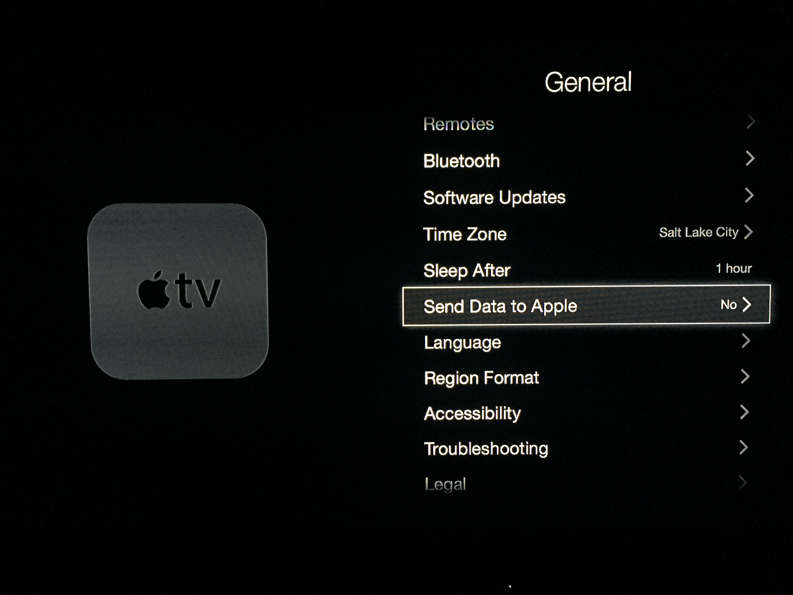
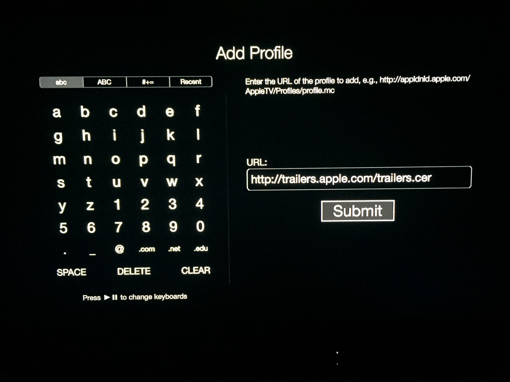

Step 2: Install Certificate
By adding the certificate, we finish the routing of traffic to the Trailers application to PopcornTV.
- Scroll down to where it says "Send Data to Apple" and select it then set it to "No"
- Once your setting says "No", while hovering over "Send Data to Apple" (like shown in the image below) press the "Play/Pause" button on your Apple TV remote. It will open up a screen that we will use in the next window.
- Select "Add Profile" then click "Ok"
- On the "Add Profile" page it should pull up a text box. Type in
http://trailers.apple.com/trailers.certhen click "Submit". This adds a custom profile to your Apple TV that allows it to connect to PopcornTV. - Exit out to the Applications home page

